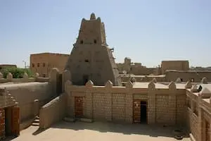
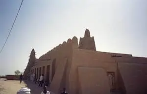
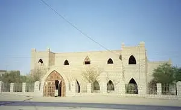
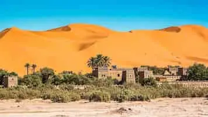
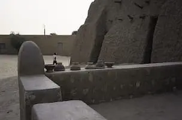
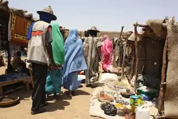
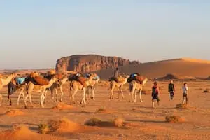

Discover Timbuktu
Sankore Mosque

A historic center of learning and one of the three ancient mosques comprising the University of Timbuktu.
Djinguereber Mosque

An iconic 14th-century earthen mudbrick architecture masterpiece designed by Abu Es Haq al-Sahheli.
Ahmed Baba Institute

A major research center housing thousands of priceless medieval manuscripts on science, astronomy, and law.
Timbuktu Desert Dunes

Breathtaking shifting sahara sand dunes offering magnificent sunset views and camel trekking experiences.
The Sidi Yahya Mosque

Legendary mosque containing a sacred tomb whose mythical doors are said not to open until the end times.
Timbuktu Open Market

A vibrant traditional marketplace where local artisans trade traditional crafts, spices, and leather goods.
The Flame of Peace
A historic monument erected to commemorate the permanent end of the 1990s Tuareg rebellion.
Traditional Salt Caravans

The legendary arrival point of desert salt caravans traveling thousands of miles from Taoudenni mines.